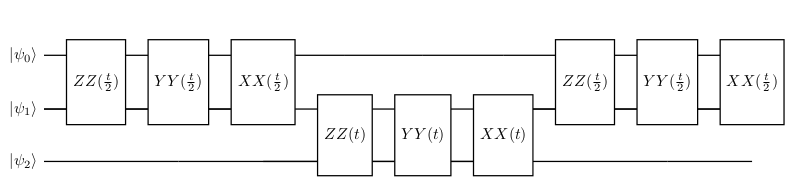
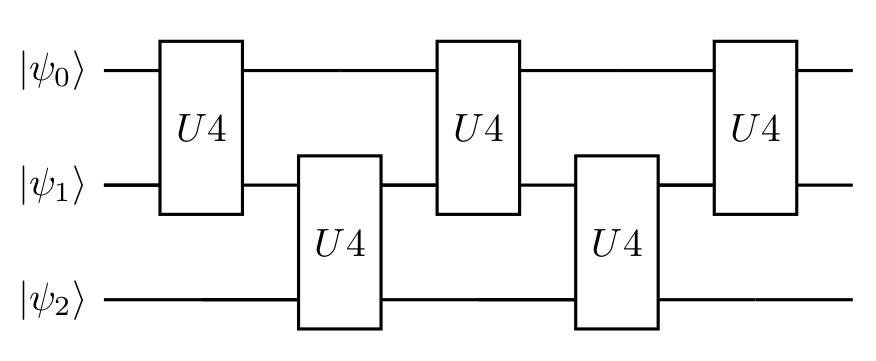

1 Cartan's KAK decomposition
We want to implement the trotter step in an effective way, but a naive implementation of ZZ, XX, and YY gates requires 6 CX gates. We will show how to do the same using only the 3CX gate by Cartan's KAK decomposition.
2 ZZ, XX, and YY gates
Now we have to create ZZ, XX, and YY gates for use in simulation.
using QuantumCircuits
using QuantumCircuits.QML
using QuantumCircuits.QCircuits.Qiskit
using QuantumCircuits.QCircuits.Qiskit: qiskit
using QuantumCircuits.QCircuits.Circuit
using QuantumCircuits.QCircuits.Circuit: toQiskit, getCode
using QuantumCircuits.QCircuits.Gates: CX
using QuantumCircuits.Execute: generate_mesuere_circuits, extractProbability, correctMeasures# This code com from using QuantumCircuits.Simulation.Gates module.
function ZZ(qc, q0, q1, t, usePulse=false)
if usePulse
qc.h(q1)
qc.rzx(q0, q1, t)
qc.x(q0)
qc.rzx(q0, q1, -t)
qc.x(q0)
qc.h(q1)
else
qc.cx(q0, q1)
qc.rz(q1, 2*t)
qc.cx(q0, q1)
end
end
function YY(qc, q0, q1, t, usePulse=false)
if usePulse
qc.sdg([q0, q1])
qc.h(q0)
qc.rzx(q0, q1, t)
qc.x(q0)
qc.rzx(q0, q1, -t)
qc.x(q0)
qc.h(q0)
qc.s([q0, q1])
else
qc.rx([q0, q1], π/2)
qc.cx(q0, q1)
qc.rz(q1, 2*t)
qc.cx(q0, q1)
qc.rx([q0, q1], -π/2)
end
end
function XX(qc, q0, q1, t, usePulse=false)
if usePulse
qc.h(q0)
qc.rzx(q0, q1, t)
qc.x(q0)
qc.rzx(q0, q1, -t)
qc.x(q0)
qc.h(q0)
else
qc.ry([q0, q1], π/2)
qc.cx(q0, q1)
qc.rz(q1, 2*t)
qc.cx(q0, q1)
qc.ry([q0, q1], -π/2)
end
end3 U4 - Cartan's KAK decomposition
Any 2 qubits unitary can be decomposed used 3 cx gate (see the paper "Minimal Universal Two-qubit Quantum Circuits" https://arxiv.org/abs/quant-ph/0308033). In QuantumCircuits library we have defined the U4 gate.
qc = QCircuit(2)
# Create u4 gate with random parameter
qc.u4(0, 1)
# Decompose circuit to use base gates
qc2 = decompose(qc)
qc2 ┌──────────────────────────┐┌───┐┌────────────┐ ┌───┐»
q0_0: ┤ U3(2.2832,4.3098,1.6032) ├┤ X ├┤ Rz(3.6536) ├──■────────────────┤ X ├»
├─────────────────────────┬┘└─┬─┘├────────────┤┌─┴─┐┌────────────┐└─┬─┘»
q0_1: ┤ U3(4.263,1.3415,2.3539) ├───■──┤ Ry(5.2857) ├┤ X ├┤ Ry(4.1467) ├──■──»
└─────────────────────────┘ └────────────┘└───┘└────────────┘ »
c0: 2/═══════════════════════════════════════════════════════════════════════»
»
« ┌────────────────────────────┐
«q0_0: ┤ U3(3.4384,0.79627,0.14553) ├
« └┬──────────────────────────┬┘
«q0_1: ─┤ U3(4.9937,3.1561,5.6151) ├─
« └──────────────────────────┘
«c0: 2/══════════════════════════════
« Let us assume that we would like to find parameters of the U4 gate implementing exactly ZZ, YY, and XX gate combinations for a given time $t$.
t = π/2
qc = QCircuit(2)
ZZ(qc, 0, 1, t)
YY(qc, 0, 1, t)
XX(qc, 0, 1, t)
expmat = tomatrix(qc)
qc ┌─────────┐ ┌──────────┐┌─────────┐»
q1_0: ──■─────────────■──┤ Rx(π/2) ├──■─────────────■──┤ Rx(-π/2) ├┤ Ry(π/2) ├»
┌─┴─┐┌───────┐┌─┴─┐├─────────┤┌─┴─┐┌───────┐┌─┴─┐├──────────┤├─────────┤»
q1_1: ┤ X ├┤ Rz(π) ├┤ X ├┤ Rx(π/2) ├┤ X ├┤ Rz(π) ├┤ X ├┤ Rx(-π/2) ├┤ Ry(π/2) ├»
└───┘└───────┘└───┘└─────────┘└───┘└───────┘└───┘└──────────┘└─────────┘»
c1: 2/════════════════════════════════════════════════════════════════════════»
»
« ┌──────────┐
«q1_0: ──■─────────────■──┤ Ry(-π/2) ├
« ┌─┴─┐┌───────┐┌─┴─┐├──────────┤
«q1_1: ┤ X ├┤ Rz(π) ├┤ X ├┤ Ry(-π/2) ├
« └───┘└───────┘└───┘└──────────┘
«c1: 2/═══════════════════════════════
« We have to choose the ansact, in our case this will be a U4 gate and in that case, we are sure that we always can find the correct parameters.
qr = QuantumRegister(2)
qc = QCircuit(qr)
qc.u4(qr[0], qr[1])
params = getRandParameters(qc)
setparameters!(qc, params)
qc = decompose(qc) ┌───────────────────────────┐┌───┐┌────────────┐ ┌───┐»
q2_0: ┤ U3(1.7624,0.77116,3.9005) ├┤ X ├┤ Rz(5.2775) ├──■────────────────┤ X ├»
└┬──────────────────────────┤└─┬─┘├────────────┤┌─┴─┐┌────────────┐└─┬─┘»
q2_1: ─┤ U3(5.0677,5.7902,6.2463) ├──■──┤ Ry(4.4635) ├┤ X ├┤ Ry(2.5877) ├──■──»
└──────────────────────────┘ └────────────┘└───┘└────────────┘ »
« ┌──────────────────────────┐
«q2_0: ┤ U3(0.89282,1.8969,3.728) ├
« ├──────────────────────────┤
«q2_1: ┤ U3(4.2926,2.4936,2.6366) ├
« └──────────────────────────┘Now we can find the parameter of our ansact that perfectly fit our expected unitary matrix.
params, _, err, _ = findparam(expmat, qc, debug=false, trystandard=false)
err8.988143676440324e-8qc ┌──────────────────────────┐┌───┐┌──────────┐ ┌───┐»
q3_0: ┤ U3(1.4791,0.48683,4.394) ├┤ X ├┤ Rz(3π/2) ├──■─────────────┤ X ├»
└─┬─────────────────────┬──┘└─┬─┘├──────────┤┌─┴─┐┌─────────┐└─┬─┘»
q3_1: ──┤ U3(π,5.7747,5.1031) ├─────■──┤ Ry(3π/2) ├┤ X ├┤ Ry(π/2) ├──■──»
└─────────────────────┘ └──────────┘└───┘└─────────┘ »
« ┌───────────────────────────┐
«q3_0: ┤ U3(-1.4791,1.8894,4.2257) ├
« └──┬─────────────────────┬──┘
«q3_1: ───┤ U3(π,1.9652,2.8646) ├───
« └─────────────────────┘ A description of the optimization method used is available in the notebook Eva.
4 The effective implementation of the Trotter step
Assume that we would like to implement the Trotter step using the second-order Trotter formula (see "Quantum computers as universal quantum simulators: state-of-art and perspectives" https://arxiv.org/abs/1907.03505), we can do this using the circuit in below.

Using Cartan's KAK decomposition we can rewrite this circuit and replace ZZ, YY, and XX by singe U4 gate as in Figure below.

Assume that we would like to implement the 2 Trotter step using the second-order Trotter formula. Using Cartan's KAK decomposition each step contains 3 U4 gates. But merging the two $U4$ gates on qubits 0 and 1, the two steps of the Trotter formula using KAK decomposition look like in the Figure below. It's worth noting that these two steps of Trotter utilize only 15 CNOT gates (3 CNOT for each of the U4 gates).

Effective implementation of the two steps is important because this is how much we use in the model training process (see Algorithm evaluation). However, a similar method of connecting two U4 gates can be used for any number of steps.
5 Simulation
First we create helper function which find the parameter for U4 for ZZ, YY, and XX gates and ZZ, YY, XX, ZZ, YY and, XX and Trotter step.
# This code com from using QuantumCircuits.Simulation.Gates module.
function findU4paramsZZYYXX(t; debug=false)
qc = QCircuit(2)
ZZ(qc, 0, 1, t)
YY(qc, 0, 1, t)
XX(qc, 0, 1, t)
expmat = tomatrix(qc)
qr = QuantumRegister(2)
qc = QCircuit(qr)
qc.u4(qr[0], qr[1])
params = getRandParameters(qc)
setparameters!(qc, params)
qc = decompose(qc)
params, _, err, _ = findparam(expmat, qc, debug=debug, trystandard=false)
@assert err < 1e-5 "The error of U gate should be small but it is $err."
return params
end
function findU4paramsZZYYXXx2(t; debug=false)
qc = QCircuit(2)
ZZ(qc, 0, 1, t)
YY(qc, 0, 1, t)
XX(qc, 0, 1, t)
ZZ(qc, 0, 1, t)
YY(qc, 0, 1, t)
XX(qc, 0, 1, t)
expmat = tomatrix(qc)
qr = QuantumRegister(2)
qc = QCircuit(qr)
qc.u4(qr[0], qr[1])
params = getRandParameters(qc)
setparameters!(qc, params)
qc = decompose(qc)
params, _, err, _ = findparam(expmat, qc, debug=debug, trystandard=false)
@assert err < 1e-5 "The error of U gate should be small but it is $err."
return params
end
function trotter2U4(qc, qubits, t, isFirst, isLast, params, params2, params3)
if isFirst
for i in 1:(length(qubits)-2)
qc.u4(qubits[i], qubits[i+1], params2)
end
end
i = length(qubits) - 1
qc.u4(qubits[i], qubits[i+1], params)
if isLast
for i in 1:(length(qubits)-2)
qc.u4(qubits[i], qubits[i+1], params2)
end
else
for i in 1:(length(qubits)-2)
qc.u4(qubits[i], qubits[i+1], params3)
end
end
endNext function generate circuit of the simulation algorithm for given Trotter steps number.
function generate_circuit(trotter_steps, run_step, t=π, params=nothing, params2=nothing, params3=nothing; init=false, debug=false)
qr = QuantumRegister(7, "q")
qc = QCircuit(qr)
# Prepare initial state (remember we are only evolving 3 of the 7 qubits on jakarta qubits (q_5, q_3, q_1) corresponding to the state |110>)
if init
qc.x([3, 5]) # DO NOT MODIFY (|q_5,q_3,q_1> = |110>)
end
if params == nothing
params = findU4paramsZZYYXX(t / trotter_steps, debug=debug)
params2 = findU4paramsZZYYXX(t / (2 * trotter_steps), debug=debug)
params3 = findU4paramsZZYYXXx2(t / (2 * trotter_steps), debug=debug)
end
qubits = [qr[1], qr[3], qr[5]]
for s in 1:run_step
isFirst = s == 1
isLast = s == run_step
trotter2U4(qc, qubits, t / trotter_steps, isFirst, isLast, params, params2, params3)
end
qc = decompose(qc)
return qc, params, params2, params3
endNow we can generate the circuit.
t = π
trotter_steps = 10
qc_full, _, _, _ = generate_circuit(trotter_steps, trotter_steps, t, init=true)
# Add measurment
cr = ClassicalRegister(3)
setClassicalRegister!(qc_full, cr)
qc_full.measure([1, 3, 5], [0, 1, 2])
qc_fullq_0: ─────────────────────────────────────────────────────────────────────────»
┌────────────────────────┐ ┌───┐┌──────────┐»
q_1: ┤ U3(2π,5.3676,0.032489) ├──────────────────────────────┤ X ├┤ Rz(7π/5) ├»
└────────────────────────┘ └─┬─┘└──────────┘»
q_2: ──────────────────────────────────────────────────────────┼──────────────»
┌───┐ ┌────────────────────────┐ │ ┌──────────┐»
q_3: ──────────┤ X ├─────────────┤ U3(-π,0.70057,-1.7539) ├────■──┤ Ry(7π/5) ├»
└───┘ └────────────────────────┘ └──────────┘»
q_4: ─────────────────────────────────────────────────────────────────────────»
┌───┐ ┌────────────────────────────┐ »
q_5: ──────────┤ X ├───────────┤ U3(3.1416,3.5375,-0.46269) ├─────────────────»
└───┘ └────────────────────────────┘ »
q_6: ─────────────────────────────────────────────────────────────────────────»
»
c2: 3/═════════════════════════════════════════════════════════════════════════»
»
« »
« q_0: ─────────────────────────────────────────────────»
« ┌───┐ ┌─────────────────────┐ »
« q_1: ──■───────────────┤ X ├─┤ U3(0,5.1954,6.6832) ├──»
« │ └─┬─┘ └─────────────────────┘ »
« q_2: ──┼─────────────────┼────────────────────────────»
« ┌─┴─┐┌───────────┐ │ ┌────────────────────────┐»
« q_3: ┤ X ├┤ Ry(12π/5) ├──■──┤ U3(π,0.96835,0.084917) ├»
...
« ║ ║
« q_6: ──────────────────────────────────────────────────────────────╫──╫─
« ║ ║
«c2: 3/══════════════════════════════════════════════════════════════╩══╩═
« 0 1 Next helper function is used to compare the simulation results with exact values.
using QuantumCircuits.QCircuits.Math
using QuantumCircuits.QCircuits.Gates: Xmatrix, Ymatrix, Zmatrix
XXs = kron(kron(eye(2), Xmatrix), Xmatrix) + kron(kron(Xmatrix, Xmatrix), eye(2))
YYs = kron(kron(eye(2), Ymatrix), Ymatrix) + kron(kron(Ymatrix, Ymatrix), eye(2))
ZZs = kron(kron(eye(2), Zmatrix), Zmatrix) + kron(kron(Zmatrix, Zmatrix), eye(2))
Hs = XXs + YYs + ZZs
U_heis3(t) = exp(-im * Hs * t)
const backend = QuantumSimulator()
function check_simulation_err(qc, t)
sym_full = execute(backend, qc)
exp_full = U_heis3(t) * ket"110"
exp_full = abs.(exp_full) .^ 2
return sum(abs.(sym_full - exp_full))
endAnd, now we can check the results.
check_simulation_err(qc_full, t)0.102783108661551